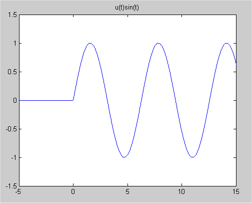

Table of Contents
Impulse Functions
Discussion
Consider an elastic collision. In such a collision, the energy of the first
object is instantaneously transferred to the second object. So if two billiard
balls meet in an elastic collision, the first ball stops immediately upon
impact and the second ball immediately begins moving in the direction the
first ball was moving. Of course, this is an idealization of what happens in
practice, as anyone who has watched their cue ball follow another ball into a
pocket knows. We now ask, what is the force exerted on the first ball by the
second in an ideal elastic collision? Since
$$ \text{energy transferred} = \text{work} = \text{force}\times
\text{distance}$$
and the distance is 0, the force must be infinite at the point of contact. The
force must be 0 everywhere else of course. We represent the force by an
idealized function called the Dirac delta function, which is written
$\delta(t)$.
The function $\delta(t)$ is defined by the property
that
$$
\int_a^bf(t)\delta(t)\,dt=\left\{\eqalign{f(&0),\qquad \text{if $a\le0\le
b$}
\cr
&0,\qquad \text{otherwise} \cr }\right.
$$
reflecting the fact that $\delta(t) = 0$ away from the origin while the
value at
the origin is so large that when multiplied by 0 you get 1 (so that total
energy transferred is 1). Of course, no such
function exists in the classical sense - this is an "idealized
function,"
just as perfectly elastic collisions are idealizations.
The next question is how do we handle differential equations involving impulse
functions? For example, consider a spring-mass system where the forcing
function consists of an impulse (e.g. you hit it with a hammer). The most
efficient way to handle this
situation is with Laplace transforms (though it is possible to use variation
of parameters). The key fact is that
Theorem:
${\mathcal L}\{\delta(t-c)\} = e^{-cs}
$, provided $c\ge0$.
Proof:
$$ \begin{align}
{\mathcal L}\{\delta(t-c)\}&=\int_0^{\infty}\delta(t-c)e^{-st}\,dt \\
&=\int_{-c}^{\infty}\delta(u)e^{-s(u+c)}\,du \\
&=e^{-s(0+c)}=e^{-sc}
\end{align} $$
With this in mind it is tempting to talk about an example like the
following. But we will need to discuss some matters at the end before we
are ready for a paradigm.
ALMOST CORRECT EXAMPLE:
$$ \begin{align}
x'' + x &= \delta(t) \\
x(0)&=0 \\
x'(0)&=0
\end{align} $$
We use exactly the same technique here as in the previous section.
Step 1: Take the Laplace transform of both sides of the equation.
$$ \begin{align}
{\mathcal L}\{x'' + x\} &= {\mathcal L}\{x''\} + {\mathcal L}\{x\} \\
&= s^2 {\mathcal L}\{x\} - sx(0) - x'(0) + {\mathcal L}\{x\} \\
&= (s^2 + 1){\mathcal L}\{x\} \\
{\mathcal L}\{\delta(t)\} &= e^{-0s}=1 \\
(s^2 + 1){\mathcal L}\{x\} &= 1
\end{align} $$
Step 2: Solve for ${\mathcal L}\{x\}$.
$$ {\mathcal L}\{x\} = 1/(s^2 +1) $$
Step 3: Take the inverse Laplace transform to find the solution.
$$ x(t) = \sin(t) $$
This looks good, but worried by the title, "Almost Correct Example," we
now check our work. Observe that $x'(0)=1\ne0$ and so we have somehow
failed to satisfy our initial values. What went wrong here? The difficulty
lies in the nature of our initial values and our idealized impulse
function. Consider a mass of $1kg$ on an undamped spring with spring
constant $1kg/sec^2$. Initially at rest, the mass is subjected to an
impulse at time 0 that instantaneously imparts an energy of 0.5 joules. The
differential equation corresponding to this physical situation is exactly
the differential equation of the example above, $x''+x=\delta(t)$.
(You may try to work out for yourself why 0.5 joules corresponds to
$\delta(t)$ instead of $0.5\delta(t)$. If you have questions stop by my
office and I'll answer them.) The
initial values are $x(0)=0$, $x'(0)=0$ since the system is initially at rest.
But when the impulse hits, the energy of the impulse is instantaneously
converted into kinetic energy which means that the velocity at time 0
instantaneously changes from 0 to 1. So our solution appears to
have
$x'(0)=1$, even though we found it using $x'(0)=0$. This is a physical
justification for our answer. A mathematical
justification is that our answer isn't actually $\sin(t)$. After all
$\sin(-\pi/2)=-1$, but the mass is at rest prior to time 0 and so
$x(-\pi/2)=0$ and not $-1$. Properly, we should write our answer as
$$
x(t)=\left\{\eqalign{&0,\qquad t<0 \cr&\sin(t),\qquad t\ge0.\cr}\right.
$$
Since this form is rather lengthy, we introduce one last function, the
unit step function
$$
u(t)=\left\{\eqalign{&0,\qquad t<0 \cr&1,\qquad t\ge0.\cr}\right.
$$
Then we can write our answer to the previous example as
$x(t)=u(t)\sin(t)$. The $u(t)$ reminds us that the mass is initially at rest
and so $x(t)=0$ for all $t<0$. If we try to
graph the solution $u(t)\sin(t)$ to the problem $x''+x=\delta(t)$,
$x(0)=0$ and $x'(0)=0$ we get figure 1. The difficulty with our answer
was that $x'(0)\ne0$ and if we look at figure 1, we see that this
difficulty hasn't gone away. The graph has a corner at $t=0$ and so $x'$
doesn't exist at $t=0$. Mathematically, we reconcile our problems by
defining the left and right derivatives. The left derivative at $t=0$ is
the slope of the curve on the left side of $t=0$ and the right
derivative at $t=0$ is the slope of the curve on the right side of
$t=0$. In this case, the curve is horizontal to the left of $t=0$ and so
the left derivative is 0. On the right side, the curve rises with a
slope of 1 (remember that the horizontal and vertical scales are
different) and so the right derivative is 1. We can then make our problem
mathematically precise by saying that we want the solution to
$x''+x=\delta(t)$ with initial values $x(0)=0$ and $x'(0)=0$ on the
left.

Paradigm
$$ \begin{align}
x''+2x'+5x&=\delta(t) \\
x(0)&=0 \\
x'(0)&=0
\end{align} $$
Step 1: Take the Laplace transform of both sides.
$$\begin{align}
s^2{\mathcal L}\{x\}-s\cdot0-0+2s{\mathcal L}\{x\}-2\cdot0
+5{\mathcal L}\{x\}&=1 \cr
(s^2+2s+5){\mathcal L}\{x\}&=1
\end{align} $$
Step 2: Solve for ${\mathcal L}\{x\}$.
$${\mathcal L}\{x\}=\frac{1}{s^2+2s+5}$$
Step 3: Take the inverse Laplace transform to find the solution.
(Remember to use the step function as a cutoff.)
$$\begin{align}
x(t)&={\mathcal L}^{-1}\{\frac{1}{s^2+2s+5}\}\\
&={\mathcal L}^{-1}\{\frac{1}{(s+1)^2+2^2}\}\\
&=\frac12{\mathcal L}^{-1}\{\frac{2}{(s+1)^2+2^2}\}\\
&=\frac12u(t)e^{-t}\sin(2t)
\end{align}$$
You may be wondering about whether we should have used the step function
$u(t)$ when solving problems in section 3. The step function is used to
emphasize that the system is in one state prior to some time and in a
different state after that time. For example, the system is at rest and
then is struck by an impulse and is no longer at rest. Physically, any
problem that says we take a spring and then we pull it to some initial
condition and let it go falls into this category. But this is a math
course and not a physics course. We are just going to concern ourselves
with solving differential equations and so we will only worry about
listing the step function $u(t)$ for solving problems with impulses where
we run into mathematical problems as above where we have to
distinguish between left and right limits for the initial values.
While we will usually pick our time scale so an impulse comes at $t=0$,
this isn't always convenient. The usual way of writing an impulse at time
$t=c$ is $\delta(t-c)$. Note that $t-c=0$ when $t=c$ so the delta function
has its spike at $t=c$ in this case. We can handle such an impulse
using the fact that
${\mathcal L}^{-1}\left\{e^{-cs}{\mathcal L}\{f\}\right\}=u(t-c)f(t-c)$,
as noted in the table.
EXAMPLE: $$\begin{align}
x''+5x'+6x&=\delta(t-1)\\
x(0)&=0\\
x'(0)&=0
\end{align}$$
Step 1:
$$(s^2+5s+6){\mathcal L}\{x\}=e^{-s}$$
Step 2:
$${\mathcal L}\{x\}=\frac{e^{-s}}{s^2+5s+6}$$
Step 3: Here we try to write ${\mathcal L}\{x\}$ in the form
$e^{-cs}{\mathcal L}\{f\}$. We
initially ignore the $e^{-s}$ term as we try to write the rest of our
formula for ${\mathcal L}\{x\}$ as ${\mathcal L}\{f\}$ for some function
$f$.
$$\begin{align}
\frac{1}{s^2+5s+6}&=\frac{1}{(s+2)(s+3)} \\
&=\frac{1}{s+2}-\frac{1}{s+3}\\
&={\mathcal L}\{e^{-2t}-e^{-3t}\}
\end{align}$$
Now we can write
$$ \frac{e^{-s}}{s^2+5s+6}=e^{-s}{\mathcal L}\{e^{-2t}-e^{-3t}\}$$
We choose $c=1$ since we have $e^{-s}$ and apply our rule that
${\mathcal L}^{-1}\{e^{-cs}{\mathcal L}\{f\}\}=u(t-c)f(t-c)$ to get
$$\begin{align}
x(t)&={\mathcal L}^{-1}\{\frac{e^{-s}}{s^2+5s+6}\}\\
&=u(t-1)(e^{-2(t-1)}-e^{-3(t-1)})
\end{align} $$
One case where we couldn't set our time scale to have the impulse occur at
$t=0$ is when there is more than one impulse.
EXAMPLE: The following equation models a spring that receives an initial
shock and then an aftershock half as strong 5 units of time later.
$$\begin{align}
x''+4x'+20x&=2\delta(t)+\delta(t-5)\\
x(0)&=0\\
x'(0)&=0
\end{align} $$
Step 1: Since the initial conditions are all 0,
$$(s^2+4s+20){\mathcal L}\{x\}=2+e^{-5s}$$
Step 2:
$${\mathcal L}\{x\}=\frac{2}{s^2+4s+20}+\frac{e^{-5s}}{s^2+4s+20}$$
Step 3: We initially ignore the numerators of both terms in
${\mathcal L}\{x\}$ and
just concentrate on finding ${\mathcal L}^{-1}\{\frac{1}{s^2+4s+20}\}$. We
compute
$$\begin{align}
\frac{1}{s^2+4s+20}&=\frac{1}{(s+2)^2+4^2}\\
&=\frac14\cdot\frac{4}{(s+2)^2+4^2}
\end{align} $$
Now we use this to compute
$$\begin{align}
{\mathcal
L}^{-1}\{\frac{2}{s^2+4s+20}\}&=
2{\mathcal L}^{-1}\{\frac{1}{s^2+4s+20}\} \\
&=2\frac{1}{4}u(t)e^{-2t}\sin(4t) \\
{\mathcal L}^{-1}\{\frac{e^{-5s}}{s^2+4s+20}\}&=
{\mathcal L}^{-1}\{e^{-5s}{\mathcal L}\{\frac14e^{-2t}\sin(4t)\}\} \\
&=u(t-5)\frac14e^{-2(t-5)}\sin(4(t-5))
\end{align} $$
Finally, $x(t)$ is the sum of both of these,
$$x(t)=\frac12u(t)e^{-2t}\sin(4t)+\frac14u(t-5)e^{-2(t-5)}\sin(4(t-5))$$
Note that the $u(t)$ and $u(t-5)$ terms here serve to indicate where each
part of the solution is active. In particular, we need the $u(t-5)$ term
to indicate that the part of the solution corresponding to the aftershock
at $t=5$ doesn't affect the behavior of the system before the aftershock
occurs!
Randomly Generated Examples
A randomly generated second-order constant-coefficient linear initial value problem with $\delta(t)$ on the
right-hand side is given below.
As always, once you submit an answer, you will have a link to see the detailed
solution for the problem, as well as the option to generate a new problem and you can just quickly enter
a "dummy" answer like $t$ to quickly get to the detailed solution if that is all you want to see.
©1994-2026 Andrew G. Bennett